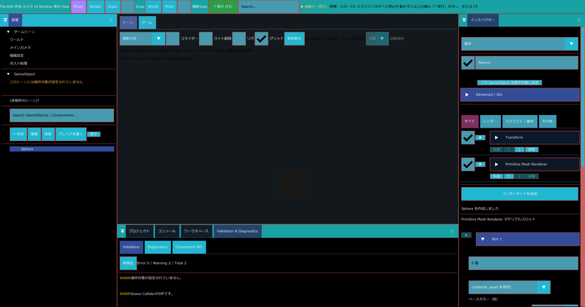
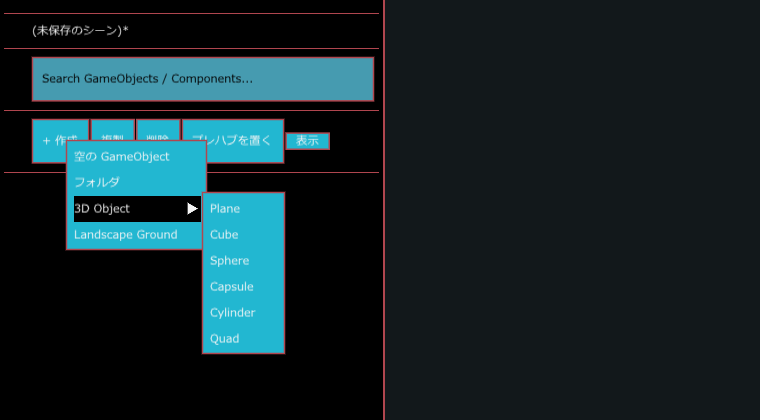
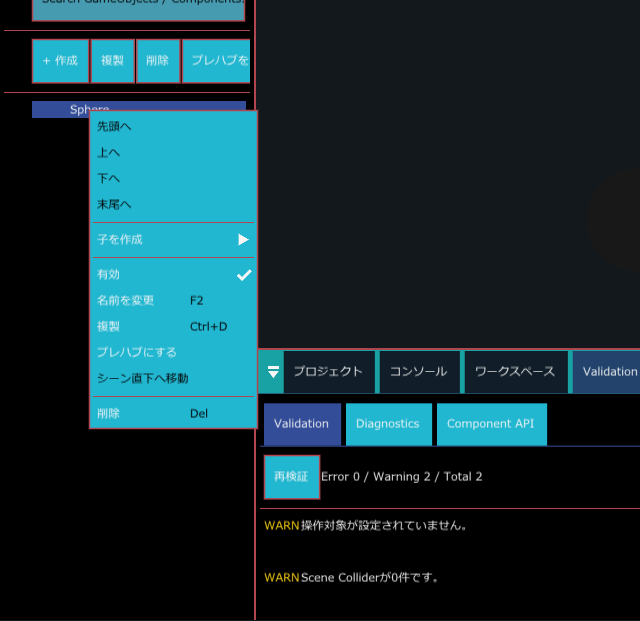

階層パネル
画面左の 階層 パネルには、シーンに入っている GameObject が親子関係のツリーで並びます。GameObject を作る、選ぶ、名前を変える、並べ替える、親子にする、といった操作をここで行います。

こんなときに使う
- シーンに物（立方体、地形など）を足したいとき（+ 作成）
- たくさんの GameObject を、フォルダーにまとめて整理したいとき
- 親子にして、まとめて動かしたいとき（ドラッグで子にする）
- 名前や付いているコンポーネントで、GameObject を探したいとき（検索）
パネルの並び
パネルの中は、上から次の順に並びます。
- ゲームシーン：ワールド、メインカメラ、描画設定、ポスト処理 の 4 項目です。クリックすると、その設定がインスペクターに出ます。（ゲームシーンの設定）
- GameObject：見出しの下に、操作対象が決まっていないときは「このシーンには操作対象が設定されていません」と黄色で表示されます。
- シーン名：今のシーンのファイル名です。一度も保存していないシーンは (未保存のシーン) と表示され、保存していない変更があると末尾に * が付きます。実行中は右に [実行中] と表示されます。
- 検索欄（Search GameObjects / Components...）
- ボタン列：+ 作成、複製、削除、プレハブを置く、表示
- GameObject のツリー
ボタン列
| ボタン | 働き |
|---|---|
| + 作成 | 作れる物の一覧を開きます（次の節）。 |
| 複製 | 選択中の GameObject を複製します。 |
| 削除 | 選択中の GameObject を削除します。 |
| プレハブを置く | Prefab ファイルを選んで、シーンに置きます。GameObject を選択していれば、その子として置きます。 |
| 表示 | ツリーの各行に出す種類別アイコンの出し方を選びます。常に並べる、カーソルを乗せた行だけ、出さない の 3 つから選べます。 |
GameObject を作る
- ボタン列の + 作成 を押します。
- 一覧から作りたい物を選びます。

| 項目 | 作られる物 |
|---|---|
| 空の GameObject | コンポーネントを持たない GameObject |
| フォルダ | ツリーを整理するための、フォルダとして扱われる GameObject |
| 3D Object ▶ | Plane、Cube、Sphere、Capsule、Cylinder、Quad から選びます。形の表示に必要なコンポーネント（Transform と Primitive Mesh Renderer）が付いた状態で作られます。 |
| Water ▶ | Ocean（海）か Lake（湖）を選びます。Water Body が付いた GameObject が作られます（Water Body）。 |
| Landscape Ground | 地形の GameObject |
GameObject を右クリックして 子を作成 から選ぶと、その GameObject の子として作られます。ツリーの下の何もない場所を右クリックすると 作成 だけのメニューが開き、シーン直下に作られます。
選択
| 操作 | 結果 |
|---|---|
| 行をクリック | その GameObject だけを選択します。 |
| Ctrl を押しながらクリック | 選択に加えます。選択済みの行なら選択から外します。 |
| Shift を押しながらクリック | 最後に普通にクリック（または Ctrl+クリック）した行から、今クリックした行までを、画面に見えている順にまとめて選択します。 |
| 行の左の矢印をクリック、または行をダブルクリック | 子を開く・閉じるを切り替えます。 |
選択した GameObject は、インスペクターとシーンビューにも反映されます。
行の見た目
行の名前の前後には、状態を表す文字が付きます。
| 表示 | 意味 |
|---|---|
| [Prefab] 名前 | Prefab の元になっている GameObject（ルート） |
| [P] 名前 | Prefab から置かれた GameObject |
| [Controlled] 名前 | ゲームを実行したときの操作対象 |
| 名前 [Missing] | 元の Prefab ファイルが見つからない GameObject |
文字の色にも意味があります。
- 灰色：無効になっている GameObject（自分か親が無効）
- 赤：元の Prefab ファイルが見つからない
- 青：Prefab から置かれた
アイコンを表示する設定のときは、名前の横に、GameObject の種類のアイコンと、付いているコンポーネントのアイコンが並びます。アイコンのある行にマウスを乗せると、付いているコンポーネントの名前が一覧で表示されます。
検索
検索欄に文字を入れると、名前か、付いているコンポーネントの名前にその文字を含む GameObject だけがツリーに残ります。英字の大文字と小文字は区別しません。
子が当てはまった場合は、その親も残ります。検索中は、子を持つ行が自動で開きます。検索欄を空にすると、検索する前の開き方に戻ります。
右クリックメニュー

GameObject の行を右クリックすると、その GameObject が選択され、メニューが開きます。
| 項目 | 表示されるキー | 働き |
|---|---|---|
| 先頭へ / 上へ / 下へ / 末尾へ | 同じ親の中での並び順を変えます。 | |
| 子を作成 ▶ | この GameObject の子を作ります。項目は + 作成 と同じです。 | |
| 有効 | GameObject の有効・無効を切り替えます。有効なときは ✓ が付きます。 | |
| 名前を変更 | F2 | 行が名前の入力欄に変わります。新しい名前を入れて Enter で決定します。 |
| 複製 | Ctrl+D | 選択中の GameObject を複製します。 |
| プレハブにする | この GameObject を Prefab として保存します。 | |
| シーン直下へ移動 | 親から外して、シーン直下に移します。親を持たない GameObject では押せません。 | |
| 削除 | Del | 選択中の GameObject を削除します。 |
実行中は、子を作成・有効・名前を変更・複製・プレハブにする・シーン直下へ移動・削除 が押せなくなります。
並べ替えと親子付け（ドラッグ）
行をつかんで別の行の上に運ぶと、離した位置によって結果が変わります。
| 離した位置（行の高さに対して） | 結果 | 目印 |
|---|---|---|
| 上側 35% | その行の前に並べます（同じ親になります）。 | 行の上端に太い線 |
| 真ん中 30% | その行の子にします。 | 線は出ません |
| 下側 35% | その行の後ろに並べます（同じ親になります）。 | 行の下端に太い線 |
| ツリーの下の何もない場所 | シーン直下に移します。 |
ドラッグしている行は「▲ 名前 … 移動中」と表示され、ツリーの下にも「移動中: 名前」と表示されます。自分の子の中へ入れるなど、ありえない位置で離すと「その位置へは移動できません（循環階層を含む）」と表示され、何も変わりません。うまくいくと「Hierarchy の親子/兄弟順を変更しました」と表示されます。
アセットを置く（ドラッグ）
プロジェクトパネルのアセットを階層パネルにドラッグして離すと、シーンに置けます。
- GameObject の行の上で離す：その GameObject の子として置きます。
- ツリーの下の何もない場所で離す：シーン直下に置きます。
実行中はアセットを置けません。
使い方の例
ステージの物をフォルダーにまとめる
- + 作成 > フォルダ を選びます。
- できた行を右クリックして 名前を変更（F2）を選び、「Props」などの名前にします。
- まとめたい GameObject の行をつかみ、フォルダの行の高さの真ん中（線が出ない位置）で離して、子にします。
- フォルダの行の左の矢印で、中身を閉じておくと見やすくなります。
物を別の物の子にして、一緒に動くようにする
- + 作成 > 3D Object > Cube で立方体を作ります。
- 立方体の行を、親にしたい GameObject の行の真ん中で離します。
- 親を動かすと、子の立方体も一緒に動くことをシーンビューで確かめます。
ライトだけを探す
- 検索欄に
Lightと入れます。 - 名前か、付いているコンポーネントの名前に Light を含む GameObject だけが表示されます。検索欄を空にすると元に戻ります。